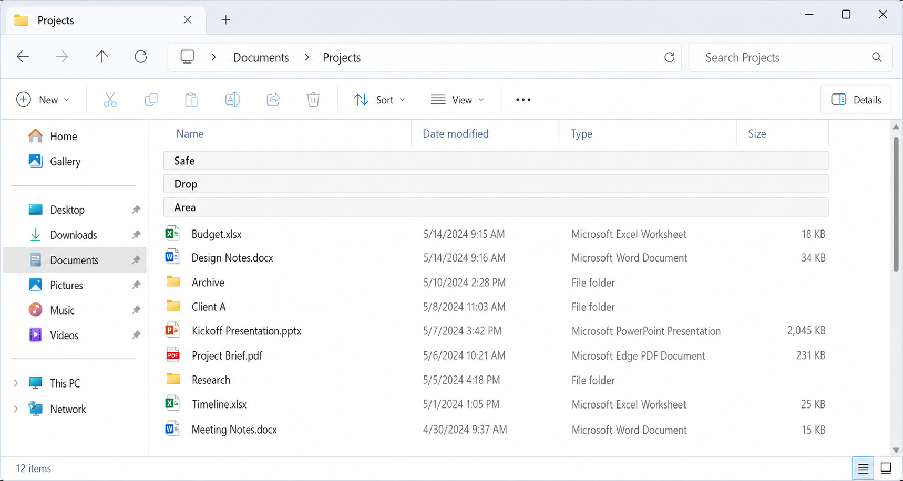

Safe Drop Area for
Windows File Explorer
Overview
Safe Drop Area is a proposed File Explorer
feature that adds a pinned, protected drop target at the top of applicable
folder views. When enabled, it gives users a clear and reliable place to drop
files and folders into the currently open folder without accidentally targeting
a subfolder.
The feature is intended to reduce a
long-standing drag-and-drop usability problem in crowded folder views,
especially during desktop and folder reorganization tasks. It preserves
existing Explorer move/copy semantics and focuses only on improving target safety
and discoverability rather than changing the broader drag-and-drop model.
User Problem
Users frequently reorganize files by dragging
items from the desktop or one folder window into
another. In dense Details/List-style folder views, there may be little or no
blank area available to safely target the current folder itself.
As a result, users can accidentally drop onto a
visible subfolder rather than into the currently open folder. This can cause
files or folders to appear to disappear into the wrong location, forcing the
user to search for the misplaced item or rely on Undo after the fact. Existing
mitigations such as drag-threshold tuning, confirmation tools, or disabling
drag-and-drop either reduce convenience, add friction, or address the error
only after it has already occurred.
Scenario
A user is reorganizing desktop files into a
crowded destination folder in File Explorer. The folder contains many
subfolders and documents, leaving no obvious empty area where an item can be
safely dropped into the current folder.
With Safe Drop Area enabled, the user sees a
fixed target at the top of the folder view and can drop onto it with
confidence. The drop is routed to the currently open folder using Explorer's
existing move/copy rules, while intentional direct drops onto subfolders
continue to work normally.
Requirements
Functional requirements
- File Explorer shall provide a Safe Drop
Area in applicable Details/List-style folder views.
- The Safe Drop Area shall appear at the top
of the folder contents as pinned virtual rows.
- The Safe Drop Area shall always target the
currently open folder, not a subfolder.
- The Safe Drop Area shall be controlled by
a single global preference.
- When enabled in one applicable Explorer
window, the Safe Drop Area shall appear in all applicable Explorer
windows.
- When disabled, the Safe Drop Area shall be
hidden in all applicable Explorer windows.
- The Safe Drop Area shall remain visible
while enabled and shall not appear only during drag operations.
- The default configuration shall use three
virtual rows.
- Users shall be able to switch to a one-row
compact mode through settings.
- Dropping onto the Safe Drop Area shall
preserve existing Explorer drag-and-drop semantics, including normal
move/copy behavior based on source, destination, drive boundaries,
modifier keys, and shell context.
Interaction requirements
- The Safe Drop Area rows shall not be
treated as real files or folders.
- The rows shall not be renameable,
movable, sortable, openable, or deletable.
- The Safe Drop Area shall remain fixed at
the top of the folder view while real items scroll below it.
- Direct drops onto real subfolders shall
continue to work normally.
- The feature shall be exposed as a toggle
in the Explorer View UI.
- Hovering over the Safe Drop Area checkbox
in the View command surface shall show the tooltip: "Show a fixed
safe area at the top of the folder where drops always go into this
folder."
- The implementation may persist the
preference similarly to other global Explorer view behaviors, such as
Folder Options or registry-backed settings, but the primary user-facing
control shall be the View UI.
UX requirements
- The Safe Drop Area shall be visually
distinct from real file and folder rows.
- The feature shall be easily discoverable while users are working
inside Explorer.
- The default experience shall prioritize a
forgiving drop target over minimum vertical space usage.
- Labeling shall clearly communicate that
dropping onto the area places items into the current folder.
Non-Requirements
- The feature does not replace intentional
drag-and-drop into subfolders.
- The feature does not introduce a
confirmation step for all drag-and-drop operations.
- The feature does not disable
drag-and-drop.
- The feature does not modify the underlying
Explorer move/copy rules.
- The feature does not define behavior for
icon, tile, gallery, or touch-optimized layouts in its initial scope.
- The feature does not redesign Explorer
navigation, sorting, grouping, or other file-management behaviors outside
the protected drop target itself.
Acceptance Criteria
Core behavior
- When the global Safe Drop Area setting is
turned on, a pinned Safe Drop Area appears in all applicable
Details/List-style Explorer windows.
- When the global setting is turned off, the
Safe Drop Area disappears from all applicable Details/List-style Explorer
windows.
- In default mode, the Safe Drop Area
renders as three pinned virtual rows at the top of the folder view.
- In compact mode, the Safe Drop Area
renders as one pinned virtual row at the top of the folder view.
- The Safe Drop Area remains visible while
enabled, regardless of whether a drag operation is active.
Drag-and-drop behavior
- Dropping onto the Safe Drop Area places
the item into the currently open folder.
- Dropping directly onto a subfolder
continues to place the item into that subfolder.
- Explorer applies the same move/copy
behavior to drops on the Safe Drop Area that it would apply to a normal
drop into the current folder under the same conditions.
- Modifier keys continue to affect the
operation exactly as they do in standard Explorer drag-and-drop.
UI and interaction
- The Safe Drop Area does not appear as a
real file or folder entry.
- Users cannot rename, open, move, sort, or
delete the Safe Drop Area.
- The Safe Drop Area remains pinned while
normal folder contents scroll underneath it.
- The feature is available through a Safe
Drop Area toggle in the Explorer View UI.
- Hovering over the View UI toggle displays
the expected tooltip text.
Quality bar
- A user unfamiliar with the feature can
recognize that the Safe Drop Area is a special target and successfully use
it to drop an item into the current folder.
- The feature reduces accidental
subfolder drops in crowded Details/List-style folder views without
disrupting existing intentional drag-and-drop workflows.
Mockup

← Back to summary